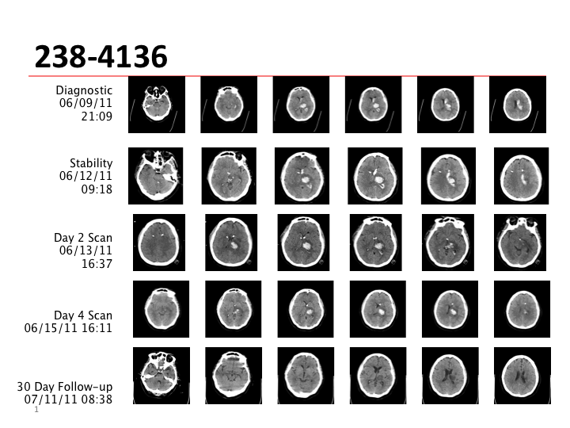
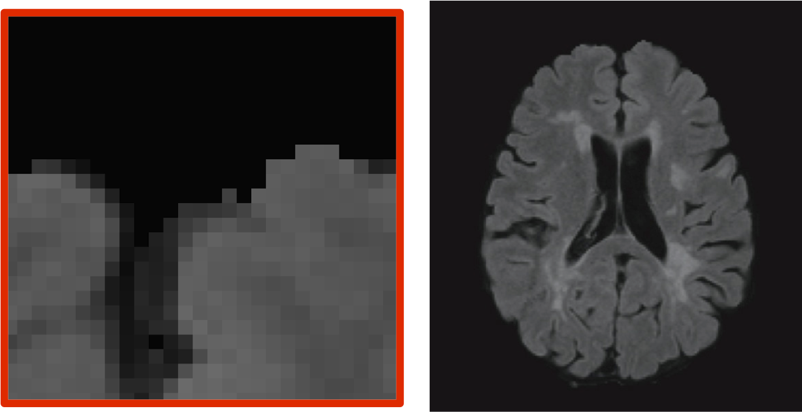
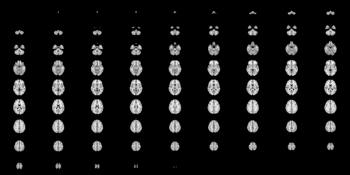
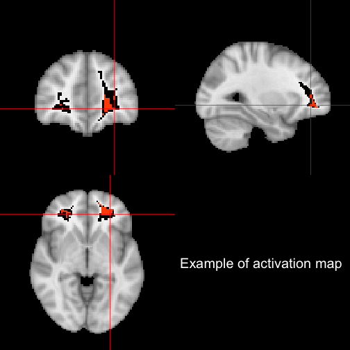

Overview
- CLEAR and MISTIE Trials
- Visualizing imaging data better
- Novel methods for CT Data
@StrictlyStat (github: muschellij2)
Johns Hopkins Bloomberg School of Public Health
Intraventricular Hemorrhage (IVH) and Intracerebral Hemorrhage (ICH), and generally hypertensive bleeds
CLEAR (IVH)- Clot Lysis: Evaluating Accelerated Resolution of Hemorrhage with rt-PA (Phase III - began Sept 2009)
MISTIE (ICH) - Minimally Invasive Surgery + rt-PA for Intracerebral Hemorrhage (Phase II - just completed)
| GCS at Enrollment | 1.34;1.75; 2.29 | < 0.0001 | 1.36;1.81; 2.40 | < 0.0001 |
| Age at Enrollment | 0.86; 0.92; 0.97 | 0.004 | 0.85; 0.91; 0.97 | 0.003 |
| Pre-Randomization ICH Volume (per 10cc) | 0.64; 0.90; 1.25 | 0.514 | 0.40; 0.64; 1.01 | 0.056 |
| MIS vs. Medical | 0.75; 2.63; 9.30 | 0.133 | ||
| Resolved ICH Volume (per 10cc) | 1.12; 1.84; 3.03 | 0.017 |



oro.nifti [Whitcher et. al. (2011)] package:Read left to right like a book - down the page is down the brain

Overall, most methods keep temporal or 2D spatial components fixed and vary the other.
Using orthographic from oro.nifti package:

RExportable
(Note - current figures do not have all these qualities )
Adler D and Murdoch D (2013).
“rgl: 3D visualization device system (OpenGL).”
R package version 0.93.928, http://CRAN.R-project.org/package=rgl. Boettiger C (2013).
knitcitations: Citations for knitr markdown files.
R package version 0.3-3, http://CRAN.R-project.org/package=knitcitations. RStudio (2013).
“RStudio: Integrated development environment for R (Version 0.97.320).”
[Computer software]. Retrieved March 6, 2013.
http://www.rstudio.org/. Stein J, Jewison N, Topol, Crane N, Frey L, Picon M, Mann P, Morris O, Harnick S, Williams J and others (1964).
Fiddler on the Roof.
Crown. Vaidyanathan R (2012).
slidify: Generate reproducible html5 slides from R markdown.
R package version 0.3.3, http://ramnathv.github.com/slidify/. Whitcher B, Schmid VJ and Thornton A (2011).
“Working with the DICOM and NIfTI Data Standards in R.”
Journal of Statistical Software, 44(6), pp. 1–28.
http://www.jstatsoft.org/v44/i06/. Xie Y (2013).
knitr: A general-purpose package for dynamic report generation in
R.
R package version 1.1.4, http://yihui.name/knitr/.